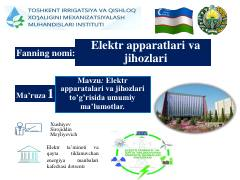

EAElektr apparatlari, ularning tasnifi va vazifalari haqida ma'ruza matni.
Mazkur ma'ruza matnida elektr apparatlari va jihozlari bo'yicha umumiy ma'lumotlar, elektr qurilmalarining ishlash tartibi hamda ularning tasnifi keltirilgan. Shuningdek, elektr energiyasini ishlab chiqarish, taqsimlash, nazorat qilish va o'zgartirish jarayonlarida elektr apparatlarining o'rni yoritib berilgan.